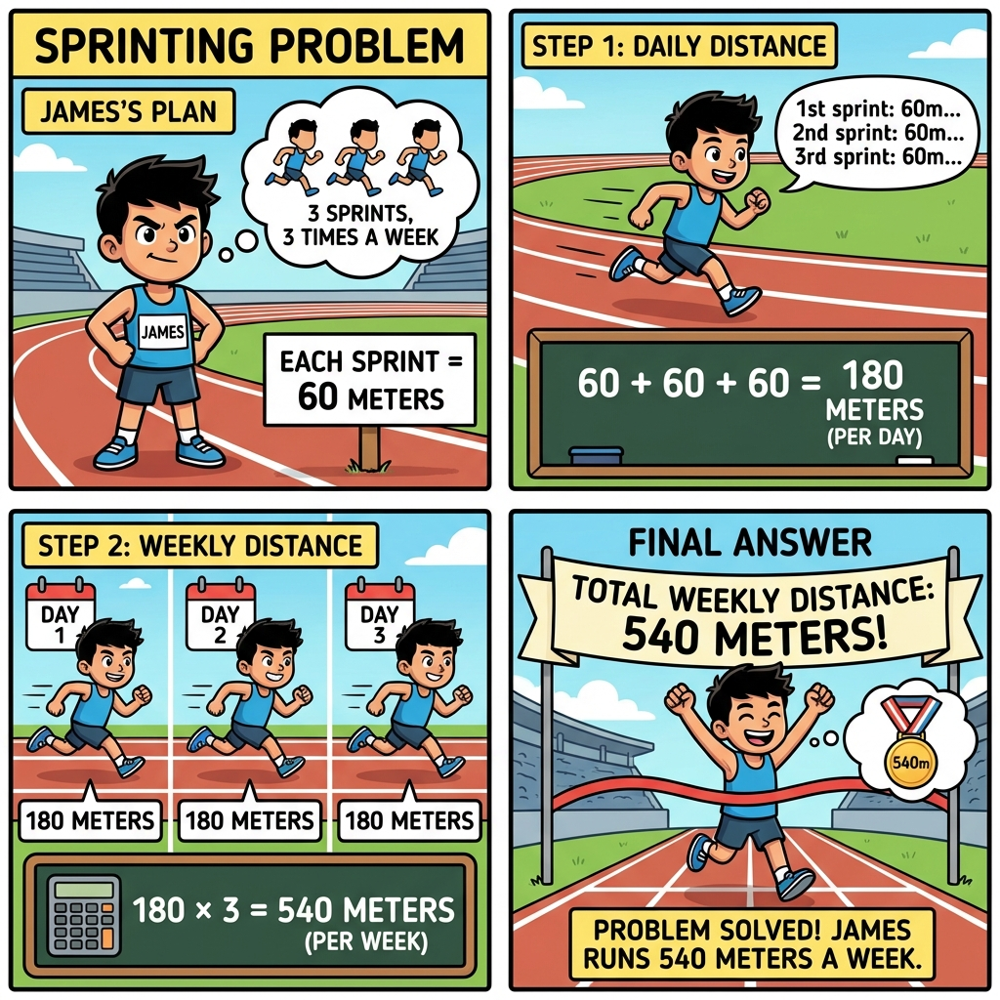
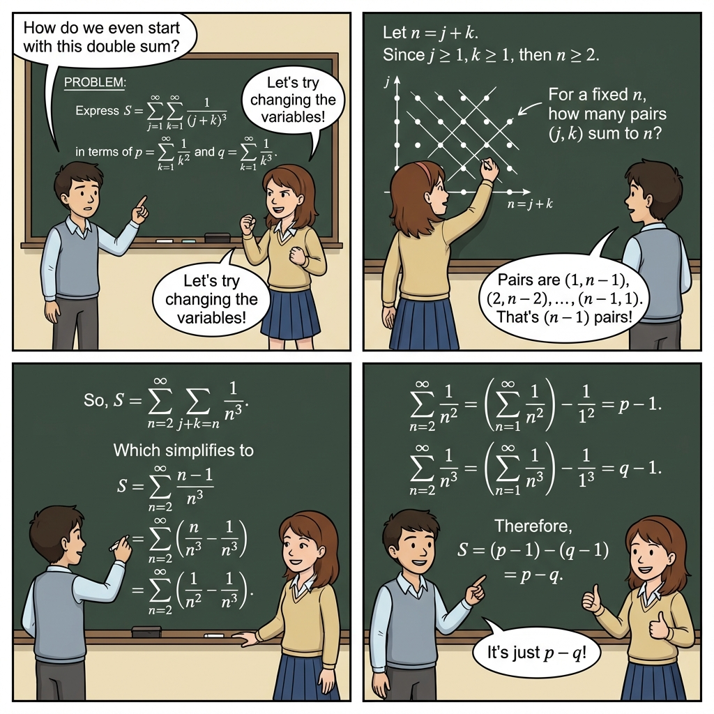
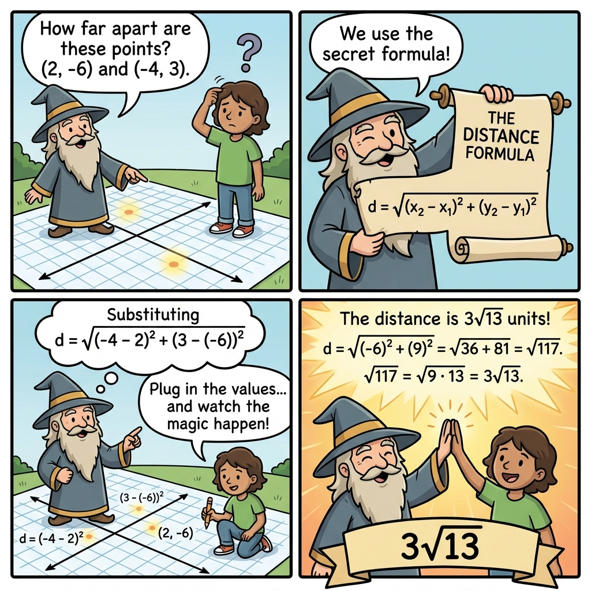
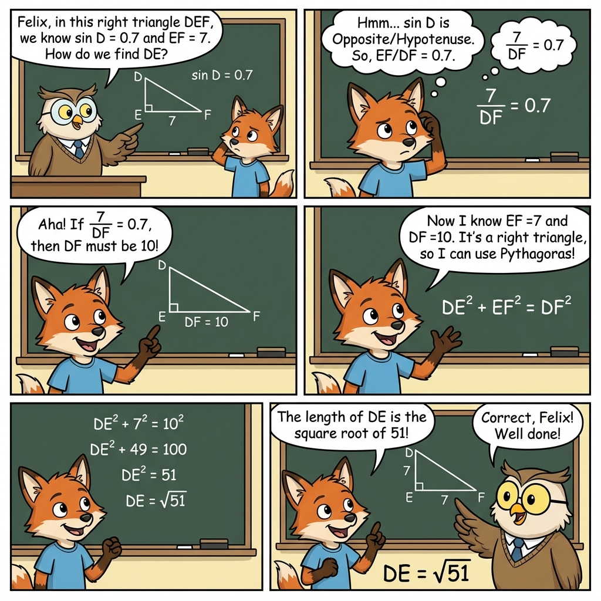

TL;DR
We propose "Thinking with Comics" — a novel reasoning paradigm that uses sequential comic panels as an intermediate reasoning medium, bridging the gap between static images and videos while preserving temporal logic, embedded text, and visual storytelling for enhanced VLM reasoning.
SEE IT IN ACTION Example Comic Outputs Across Different Tasks

Math problem solved through visual storytelling

Silice-of-life style

Multi-step arithmetic reasoning visualized

Slice-of-life Style

Role-playing Style

Cartoon Style